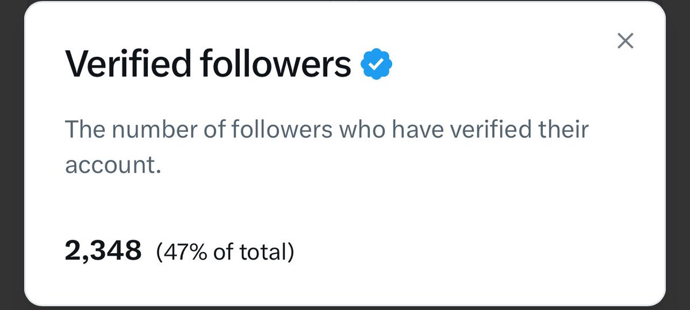

奶昔🥤
@realNyarime
@kingzw888 所以您将近一半的粉丝是p... 让我也成为你的粉丝吧（你的推文质量好好

kingkiss 🧠SENT
@kingzw888
今天才知道
2500 个蓝 V 关注就能免 Premium
5000 个蓝 V 直接免 Premium+
我这水平还差 2700 个，确实有点菜😂
蓝 V 看到的，回一个 一起互关吧
一起薅老马的羊毛！
冬天有点冷 开启抱团取暖 https://t.co/5WFtgnk1VC